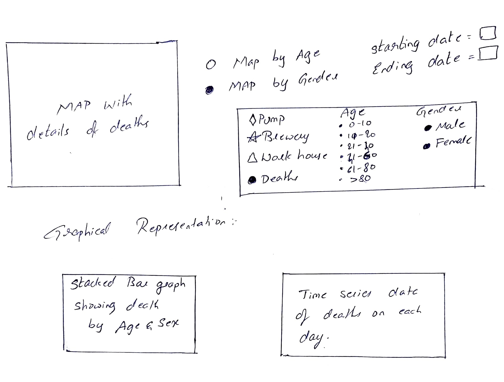
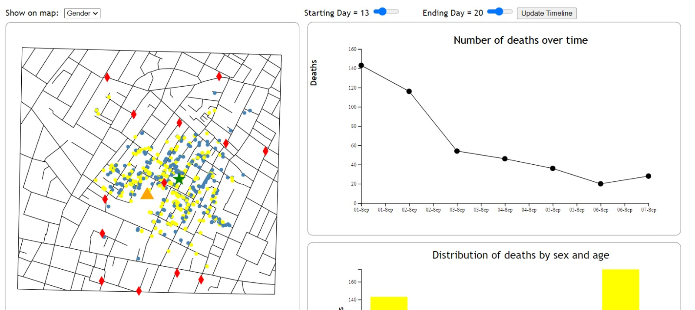
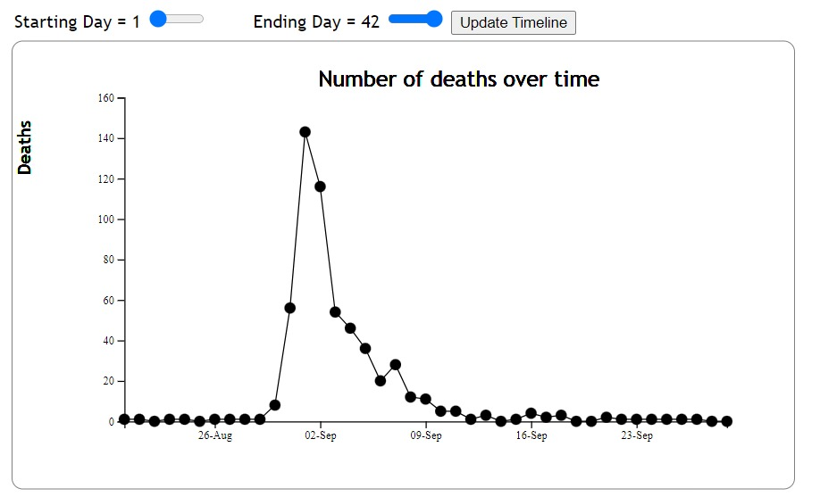
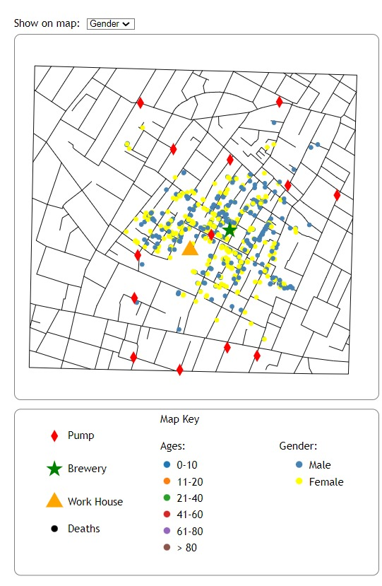
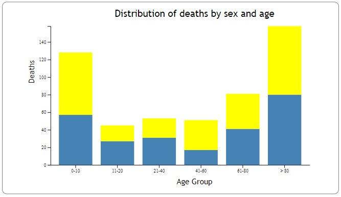
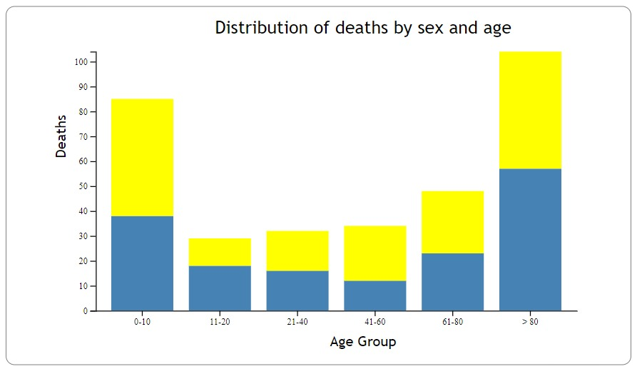

Since the introduction of data visualization, Dr. John Snow's use of data visualization to find relation between the contaminated water and cholera disease is a revolution. Data Visualization of cholera epidemic in London in 1854 is recreation of Dr. John Snow's map of London's 1854 cholera epidemic done by Arunodhaya Reddy Chityala for the course work of Visualization Design, Analysis, & Evaluation course project(H517.)
Initial design is as given below and I thought of showing number of deaths in each day to be represented in graphical representations and later changed to cumulative number of deaths per each day. Layout is also changed from initial idea for better visuals.
Layout has been changed from initial design by having the time series line chart beside the map and start date and end date is kept at top. As it will be easy and better visualize the changes in map as we hover over the data in the time series chart.
As mentioned in the initial design idea, visualizations are changed from displaying number of deaths on each day to the cumulative number of deaths till that date. To have better understanding in the pattern of deaths for the user I have added an option for user input which has starting date and ending date. If user wants to get data of deaths of nth day user has to mention n-1 day in starting date and n in the ending date.
Map will display the details of pumps, warehouse, brewery and deaths with locations. Time series chart is created for cumulative number of deaths for each day from 19 Aug to 29 Sept. Stacked bar graph will represent the gender of the victims and x-axis shows the age of victims. An information block will show which shape and colour represents which item in the map.
Deaths in map and bar graph changes as we hover over the time series chart as a part of interactive visualizations. When we hover on the deaths on Map it will give details of gender and age of that particular victim. We can also zoom in/out and pan in the map.
In Map, I have used Red, Green and Yellow colours for pump, brewery and work house respectively. To help them differentiate the red and Green colour for color blindness I have used different shapes for them.
For time series data I have used the line chart as it is simplest and better for understanding. For gender and age I have used stacked bar graph where gender will be shown in different colour in each bar and different bars for different age groups.
I have used d3.schemecategory10 for colours of ages. Then I have checked for colour blindness by colour oracle.
1. Is there any difference in immunity for cholera between children, adults and old age people?
2. Are Men More prone to cholera than Women?
Both the research questions can be answered from bar chart for entire days.
Here we can see number of deaths of children and old age people is high which answers the first research question that children and old people have less immunity for cholera. There is no significant difference between deaths of men and women which says that men are not more prone to cholera than men.
I wonder if there are any other factors that effect the deaths by cholera like: